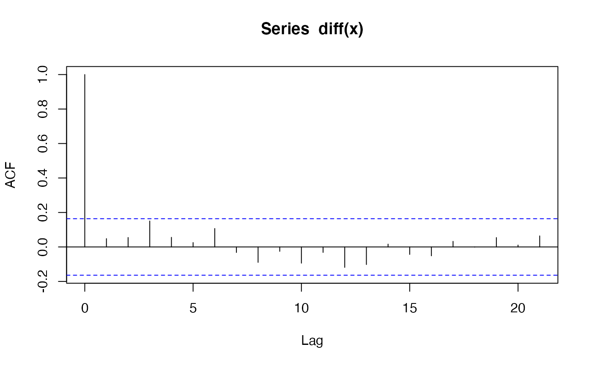
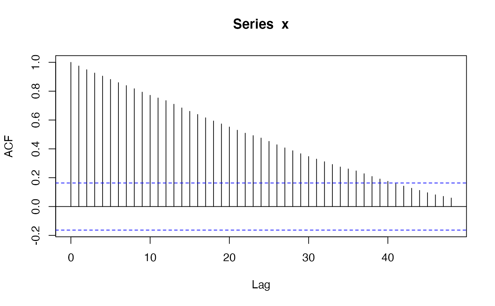
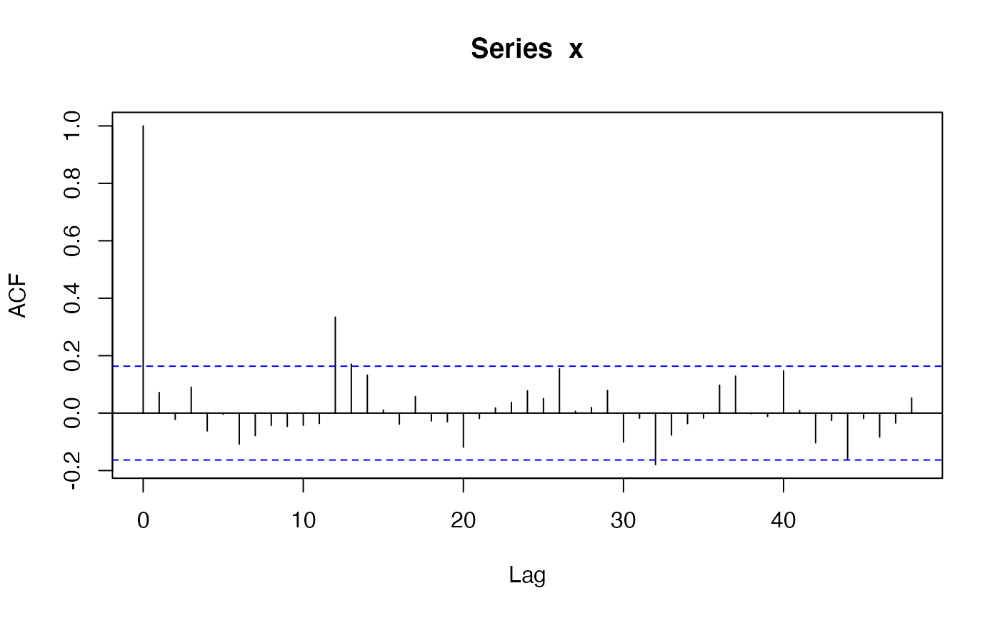
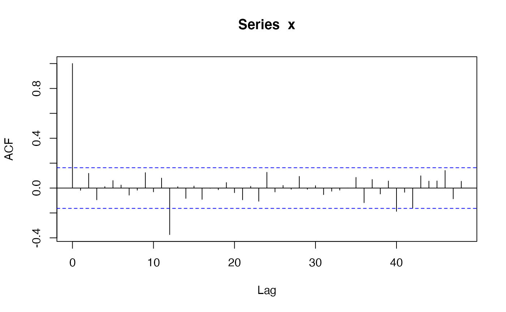

Simulate trajectories of seasonal arima models
sim_sarima.RdSimulate trajectories of seasonal arima models.
sim_sarima(model, n = NA, rand.gen = rnorm, n.start = NA, x, eps, xcenter = NULL, xintercept = NULL, ...)
Arguments
| model | specification of the model, a list, see `Details'. |
|---|---|
| rand.gen | random number generator for the innovations. |
| n | length of the time series. |
| n.start | number of burn-in observations. |
| x | initial/before values of the time series, a list, a numeric vector or time series, see Details. |
| eps | initial/before values of the innovations, a list or a numeric vector, see Details. |
| xintercept | non-constant intercept which may represent trend or covariate effects. |
| xcenter | currently ignored. |
| ... | additional arguments for |
Details
The model is specified by the argument "model" which is a list with
elements suitable to be passed to new("SarimaModel", ...), see
the description of class "SarimaModel". Here are some of the
possible components:
- nseasons
number of seasons in a year (or whatever is the larger time unit)
- iorder
order of differencing, specifies the factor \((1-B)^{d1}\) for the model.
- siorder
order of seasonal differencing, specifies the factor \((1-B^{period})^{ds}\) for the model.
- ar
ar parameters (non-seasonal)
- ma
ma parameters (non-seasonal)
- sar
seasonal ar parameters
- sma
seasonal ma parameters
Additional arguments for rand.gen may be specified
via the "..." argument.
In particular, the length of the generated series is specified with
argument n. Arguments for rand.gen can also be passed
via the "..." argument.
sim_sarima calls internally arima.sim to simulate the
ARMA part of the model. Then undifferences the result to obtain the
end result.
The function returns the simulated time series from the requested model.
Information about the model is printed on the screen if
info = "print". To suppress this, set info to any other
value.
For multple simulations with the same (or almost the same) setup, it is
better to execute prepareSimSarima once and call the
function returned by it as many times as needed.
Value
an object of class "ts"
Author
Georgi N. Boshnakov
Examples
#>x <- sim_sarima(n=144, model = list(ma=0.8)) # MA(1) x <- sim_sarima(n=144, model = list(ar=0.8)) # AR(1) x <- sim_sarima(n=144, model = list(ar=c(rep(0,11),0.8))) # SAR(1), 12 seasons x <- sim_sarima(n=144, model = list(ma=c(rep(0,11),0.8))) # SMA(1) # more enlightened SAR(1) and SMA(1) x <- sim_sarima(n=144,model=list(sar=0.8, nseasons=12, sigma2 = 1)) # SAR(1), 12 seasons x <- sim_sarima(n=144,model=list(sma=0.8, nseasons=12, sigma2 = 1)) # SMA(1) x <- sim_sarima(n=144, model = list(iorder=1, sigma2 = 1)) # (1-B)X_t = e_t (random walk) acf(x)x <- sim_sarima(n=144, model = list(iorder=2, sigma2 = 1)) # (1-B)^2 X_t = e_t x <- sim_sarima(n=144, model = list(siorder=1, nseasons=12, sigma2 = 1)) # (1-B)^{12} X_t = e_t x <- sim_sarima(n=144, model = list(iorder=1, siorder=1, nseasons=12, sigma2 = 1)) x <- sim_sarima(n=144, model = list(ma=0.4, iorder=1, siorder=1, nseasons=12, sigma2 = 1)) x <- sim_sarima(n=144, model = list(ma=0.4, sma=0.7, iorder=1, siorder=1, nseasons=12, sigma2 = 1)) x <- sim_sarima(n=144, model = list(ar=c(1.2,-0.8), ma=0.4, sar=0.3, sma=0.7, iorder=1, siorder=1, nseasons=12, sigma2 = 1)) x <- sim_sarima(n=144, model = list(iorder=1, siorder=1, nseasons=12, sigma2 = 1), x = list(init=AirPassengers[1:13])) p <- polynom(c(1,-1.2,0.8)) solve(p)#> [1] 0.75-0.8291562i 0.75+0.8291562i#> [1] 1.118034 1.118034sim_sarima(n=144, model = list(ar=c(1.2,-0.8), ma=0.4, sar=0.3, sma=0.7, iorder=1, siorder=1, nseasons=12))#> [1] 0.00000000 0.00000000 0.00000000 0.00000000 0.00000000 #> [6] 0.00000000 0.00000000 0.00000000 0.00000000 0.00000000 #> [11] 0.00000000 0.00000000 0.00000000 0.00000000 0.00000000 #> [16] 0.00000000 0.00000000 0.00000000 0.00000000 0.00000000 #> [21] 0.00000000 0.00000000 0.00000000 0.00000000 0.00000000 #> [26] 0.00000000 0.00000000 0.97308933 1.04350134 0.59292237 #> [31] -0.53822827 -4.47769247 -10.79039114 -15.61093462 -15.03436217 #> [36] -9.90625526 -2.77106146 2.49356073 1.70084985 -1.53343325 #> [41] -4.20215483 -2.52101991 2.22323764 2.61868442 -5.97858179 #> [46] -19.04262312 -25.01936230 -20.04895835 -8.59630439 0.62214940 #> [51] 0.01693335 -5.01790774 -7.92682166 -2.93504730 8.07067491 #> [56] 14.60949729 8.21672203 -6.63493784 -15.91419189 -13.31121792 #> [61] -3.50020222 3.28379557 0.21044756 -5.34098536 -5.67538886 #> [66] 3.08995325 16.68427245 25.59569129 22.13236956 13.21517068 #> [71] 9.12950754 13.19277223 20.79123151 23.05896994 14.96998480 #> [76] 6.90868985 8.32498380 19.13886453 34.41545582 44.52752101 #> [81] 40.75239588 34.25185311 34.15664273 41.41409116 51.01147588 #> [86] 52.64070961 42.20236160 33.58795445 37.94663822 52.49954503 #> [91] 71.84104105 83.59150409 77.46360219 69.03033233 70.33066643 #> [96] 81.52638849 95.43157707 99.78673446 91.07124445 83.28643097 #> [101] 89.30763568 106.97688756 130.62414330 145.33533573 138.45120893 #> [106] 124.97849411 119.74626677 126.64310376 140.69061374 147.79275159 #> [111] 143.03509687 138.97134195 149.87736612 171.92409663 197.03130887 #> [116] 210.70036497 201.97300326 184.44493448 173.57187217 175.29453150 #> [121] 188.31060067 194.99689156 190.23691613 187.11160219 200.12977189 #> [126] 225.78225150 253.37803846 267.79488717 259.20787767 240.84004134 #> [131] 229.66268033 230.96778968 244.78123846 250.03016211 243.45693745 #> [136] 240.70843863 253.52636252 280.19277484 310.55558069 329.66319950 #> [141] 325.08756447 308.14125691 297.53291465 298.28443959x <- sim_sarima(n=144, model=list(ar=c(1.2, -0.8), ma=0.4, sar=0.3, sma=0.7, iorder=1, siorder=1, nseasons=12)) ## use xintercept to include arbitrary trend/covariates sim_sarima(n = 144, model = list(sma = 0.4, ma = 0.4, sar = 0.8, ar = 0.5, nseasons = 12, sigma2 = 1), xintercept = 1:144)#> [1] -0.2530083 -0.8285530 -1.0033490 -3.5138394 -1.7712802 -1.0426153 #> [7] -1.0474588 -1.1177031 1.3171759 -1.3048626 3.0135072 3.4114213 #> [13] 3.3051298 15.4808858 21.2194594 23.5050084 29.4569897 33.1402236 #> [19] 35.8966548 37.4722891 40.2260995 41.0644829 47.5191716 48.7097546 #> [25] 52.0033458 64.1040174 70.3644256 74.2107879 83.3898594 86.7750749 #> [31] 87.8789993 91.1995938 96.7262624 101.2718453 107.7527807 108.8970362 #> [37] 113.0459895 125.9313425 131.5137134 136.1595191 149.3604698 155.0198775 #> [43] 155.1030609 158.0398892 164.6554215 170.3477743 176.8929749 179.3569840 #> [49] 184.9747662 198.5196400 205.4488323 211.7966610 224.6811965 231.1697649 #> [55] 230.9138144 234.0977038 244.1423958 249.9964802 255.1878849 258.2704035 #> [61] 266.6894501 281.6292251 287.8500809 295.2390842 307.6643564 314.9509509 #> [67] 315.2079349 317.9158687 328.7173804 335.4627755 343.4210266 347.4515970 #> [73] 359.5906552 374.5661379 381.3040648 387.0705622 397.1497070 406.3716831 #> [79] 407.1632213 410.4382473 421.8682283 428.4970223 438.6211249 443.3718830 #> [85] 455.1658228 469.0491366 476.9036931 483.2732651 492.6809060 500.8960527 #> [91] 502.8642320 507.5015153 519.1122944 526.6571533 537.2036857 542.6229856 #> [97] 553.3556518 568.8669062 576.8704728 585.5237509 594.5116006 601.1795665 #> [103] 604.1865921 611.6072080 624.2896183 631.5440109 641.1545137 647.4146819 #> [109] 657.4743341 672.1723986 678.9888622 688.6128693 697.5976705 705.8366823 #> [115] 710.8321648 719.2892308 731.6861381 740.0613000 748.5829000 755.8239820 #> [121] 766.5528098 781.2525945 788.1969906 797.3178135 806.0319330 814.4354318 #> [127] 819.9657775 828.1794025 840.0014091 849.7719654 858.8083048 866.9821129 #> [133] 878.0905587 893.7347530 900.3697438 909.3237494 916.2741019 925.8707043 #> [139] 932.8359618 941.1822546 952.2462997 963.2926878 973.8664652 982.0239247